前言-如何学习
这是个关于 顺嘴说下，如果真的想做这方面，大致分为两方面兴趣类和竞赛向的，我推荐几本书，单遵老师（真大佬）的书都还不错可以自己挑选合适的书有竞赛向的也有兴趣类的（大佬是组合数学和数论方向的，担任过5次奥赛教练，也从事过数学教育论和数学科普相关工作），然后也可以去找其他的数竟教练的书。再就是兴趣类，其实这个方面我看的不多，只知道几本比如陈振宣老师的《初中数学思维方法全解与精炼》和《数学的雨伞下》这类，还有就是数学史相关的书籍了Victor J.Katz的《数学史通论》（这本书比较偏专业可能比较无聊）还有就是伊夫斯《数学史上的里程碑》克莱因的《古今数学思想》还有本《数学沉思录：古今数学思想的发展与演变》，这些书任选其一精读即可，其他可以做为泛读和参考
注意：题号前有*号的题目为综合题，最迟初三时可做
实数及其运算
1. 数轴
1.1（2024•苏州）用数轴上的点表示下列各数，其中与原点距离最近的是 A. -3 B．1 C．2 D．3
2. 相反数
2.1 （2024•盐城二模）若\(m\)的相反数是\(\frac{1}{2023}\)，则\(m\)的值为
3. 绝对值
3.1 （2024•南京模拟）实数 \(a,b\) 满足 \(a<0,a^{2}>b^{2}\)，下列结论：① \(a<b\)，②\(b>0\)，③\(\frac{1}{a} < \frac{1}{b}\)，④\(|a| > |b|\)．其中所有正确结论的序号是 A．①④ B．①③ C．②③ D．②④
4. 科学计数法
4.1 （2024•灌云县二模）中国信息通信研究院测算，\(2020-2025\) 年，中国 \(5G\) 商用带动的信息消费规模将超过8万亿元，直接带动经济总产出达10.6万亿元．其中数据10.6万亿用科学记数法表示为
4.2 （2024•无锡模拟）用 \(3D\) 打印技术打印出的高精密游标卡尺，其误差只有 \(±0.000063\) 米，将0.000063用科学记数法表示为
5. 平方根
5.1（2024•浦口区校级三模）已知 \(x^{2} = 9\)，则 \(x\) 的值为
6. 算数平方根
6.1 \(9\) 的平方根是
7. 实数的性质
7.1 （2024•海安市模拟）已知 \(x\) 是整数，当\(|x-√30|\)取最小值时，\(x\) 的值是
8. 实数的大小比较
8.1（2024•鼓楼区二模）下列四个数中，最小的数是
A.-3 B.0 C.2 D.\(-√5\)
8.2 （2024•铜山区二模）已知 \(a,b\) 两数在数轴上对应的点如图所示，下列结论错误的是 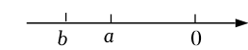 A.\(a+b < 0\) B.\(b-a > 0\) C.\(ab > 0\) D.\(|a|<|b|\)
9. 实数的大小比较
9.1 计算 \(|2-√8| - 4cos45° - (-√3) + (-\frac{1}{3})^{-2}\)
10. 实数与数轴
10.1 （2023•玄武区一模）如图，数轴上 \(A、B、C、D\) 两点分别对应实数 \(a、b、c、d\)，下列结论中一定正确的是
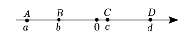
A.\(a<b\) B.\(\frac{1}{a} < \frac{1}{b}\) C. \(a^{2} < b^{2}\) D.\(\frac{a}{b} < \frac{b}{a}\)
10.2 （2023秋•泰兴市期末）已知点 \(A、B、C、D\) 在数轴上，点\(A\)和点\(C\)表示的数分别为 \(-8、2\)，点\(B\)在点\(A\)的右侧，点\(D\)在点\(C\)的右侧，且\(AB = 4,CD = 2\)．
（1）直接写出点\(B\)和点\(D\)表示的数分别为多少；
（2）若线段\(AB\)沿着数轴向右以2个单位长度/秒的速度运动，同时线段\(CD\) 沿着数轴向左以1个单位长度/秒的速度运动，设运动的时间 \(t\)（秒）\(t>0\)
①若\(B\)和\(D\)重合，则\(t\)的值为 ，若\(A\)和\(C\)重合，则\(t\)的值为 ；
②若线段\(AB\)和线段\(CD\)重叠部分为\(1\)个单位长度，求运动时间\(t\)的值；
③当 \(\frac{8}{3} < t <\frac{10}{3}\)时，下面两个式子：① \(BC + AD\)；②\(BC - AD\)中有一个式子的值是定值，你认为是定值的式子是 （填写序号），并求这个定值．
10.3 （2024秋•无锡月考）如图在数轴上\(A\)点表示数\(a\)，\(B\) 点表示数\(b\)， \(a、b\) 满足 \(|a+2| + |b-4| = 0\)，问
（1）点\(A\)表示的数为 ；点\(B\)表示的数为 ；
（2）一小球甲从点\(A\)处以1个单位/秒的速度向左运动；同时另一小球乙从点\(B\)处以2个单位/秒的速度也向左运动，设运动的时间为\(t\)（秒），
①当\(t=1\)时，甲小球到原点的距离为 ；乙小球到原点的距离为 ；当\(t=3\)时，甲小球到原点的距离为 ；乙小球到原点的距离为 ；
②试探究：甲，乙两小球到原点的距离可能相等吗？若不能，请说明理由．若能，请求出甲，乙两小球到原点的距离相等时经历的时间． 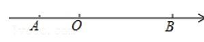
11. 数形结合
11.1 （2023秋•鼓楼区期末）阅读材料，回答问题： 如图1，点\(A,B\)在数轴上对应的数分别为\(a,b\)．若点\(C\)在数轴上，且\(AC = BC\)，则点\(C\)表示的数为\(\dfrac{a+b}{2}\)，理由如下：
设点\(C\)表示的数为\(x\) \(∵AC = x-a,BC = b-x,AC=BC\) \(x-a=b-x\) 于是得到结论
（1）如图2，点\(C,D\)在\(A,B\)两点之间，对应的数分别为\(x,y\)，且\(AC=CD=DB\)．
①若\(a=-1,b=5\)，则\(x,y\)分别是多少， ．
②小明同学认为\(x=\dfrac{2a+b}{3},y=\dfrac{a+2b}{3}\)，你同意吗？若同意，请证明；若不同意，请说明理由．
（2）如图3，点\(E\)在\(A,B\)两点之间，对应的数为\(z\)，且\(AE:BE = m:n\)．则$z= $ （用含\(a,b,m,n\)的代数式表示）． 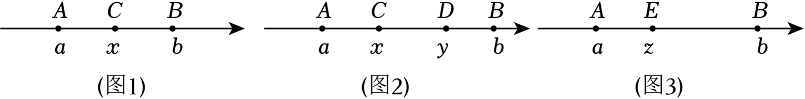
一元二次方程
1. 一元二次方程的一般形式
1.1（2022•常州模拟）将一元二次方程\(x^{2}+x=1\)化成一般形式\(ax^{2}+bx+c=0(a>0)\)之后，一次项系数和常数项分别是
2. 一元二次方程的几种解法
包括直接开平方法、配方法、公式法、因式分解法，我们来看几个典例
2.1 （2024•常熟市模拟）我们规定一种运算：若 \(a=(x_{1},y_{1}),b=(x_{2},y_{2})\)，则\(a⋅b=x_{1}x_{2}+y_{1}y_{2}\)．已知 \(a=(x-1,x+1),b=(x+3,4)\)，若\(a⋅b=7\) ，且 \(-2<x<3 \(，则\)x\)的值为 ．
2.2 （2024•天宁区校级模拟）解下列方程：
（1） \(x^{2} - 2x -1 =0\)；
（2） \(3x(x-1) = 2(1-x)\)．
3. 根的判别式
3.1（2024•宿城区校级二模）对于关于 的一元二次方程 的根的情况，有以下四种表述： ①当\(a<0,b+c>0,a+c<0\)时，方程一定没有实数根；
②当 \(a<0,b+c>0,b-c<0\)时，方程一定有实数根；
③当 \(a>0,a+b+c<0\)时，方程一定没有实数根；
④当 \(a>0,b+4a=0,4a+2b+c=0\) 时，方程一定有两个不相等的实数根．
4. 根与系数的关系
4.1 （2024•鼓楼区校级模拟）若关于\(x\)的方程 \(ax^{2}+bx+c≠0(a≠0)\)的两根之和为 \(p\)，两根之积为 \(q\)，则关于\(x\)的方程\(a(y-2)^{2}+b(y-2)+c=0\)的两根之积是
4.2 （2023•建湖县校级模拟）对于任意实数\(a,b\)，我们定义新运算\("*"：a*b = a^{2}+2ab-b^{2}\) ，若 \(m,n\)是方程\((x+2)*3=0\)的两根，则\(\frac{n}{m} + \frac{m}{n}\)的值为 ．
5. 简单应用
5.1 （2024•邗江区校级三模）为增强学生身体素质，提高学生篮球运动竞技水平，我市开展“市长杯”篮球比赛，赛制为单循环形式（每两队之间赛一场）．现计划赛程3天，每天安排5场比赛，则应邀请多少个球队参赛．
5.2 （2024•泰兴市二模）随着新能源电动汽车的快速增加，某市正在快速推进全市电动汽车的充电桩建设，已知到2023年底，该市约有3.5万个充电桩，根据规划到2025年底，全市的充电桩数量将会达到5.04万个，则从2023年底到2025年底，该市充电桩数量的年平均增长率为多少？
5.3（2024•姜堰区二模）某地建立了一个劳动实践基地，小亮从中了解到如下信息： 信息 年计划将100亩的土地全部种植甲乙两种蔬菜；其中，甲种蔬菜种植面积不少于20亩，乙种蔬菜种植面积不少于50亩； 信息2：甲种蔬菜每亩种植成本 （单位：元）与其种植面积 （单位：亩）之间满足函数关系为\(y=\frac{1}{2}x+10\)，乙种蔬菜每亩种植成本为50元． 根据以上信息完成下列问题：
（1）若甲种蔬菜每亩种植成本30元，求乙种蔬菜总种植成本；
（2）如何分配两种蔬菜的种植面积，使甲乙两种蔬菜总种植成本为4272元？
5.4 已知\(xy = -9\)，则\(x^{2}+4x+y^{2}-4y+10\)的最小值是
5.5 设实数 \(x、y、z\) 满足 \(x+y+z=4\) ，则代数式\(xy+2yz+xz\)的最大值是
5.6 已知实数 \(a、b\) 满足 \(a^{2}+ab+b^{2}=1\)，若\(p=ab+2a+2b\)，则\(p\)的最小值为
5.7 （2024•宝应县一模）在数学课上，老师要求同学们将一个关于字母\(x\)的二次三项式 \(2x^{2}+bx+c\) （ \(b、c\)是常数）配成\(2(x-m)^{2}-3\)（\(m\)是常数）的形式，则\(b+c\)的最小值是
6. 实际问题
有很多种，常见的有传播增长率图形变化销售等
6.1（16-17九年级上·山东济宁·期中）有x支球队参加篮球比赛，共比赛了45场，每两队之间都比赛一场，则列出符合题意的方程是
6.2（2021·江苏盐城·一模）据美国约翰斯霍普金斯大学发布的全球新冠肺炎数据实时统计系统，截至美国东部时间3月28日晚6时，全美共报告新冠肺炎确诊人数超过3025万，死亡超过54.9万．已知有一人患了新冠肺炎，经过两轮传染后，共有144人患了新冠肺炎，每轮传染中平均每人传染了多少人．
6.3 （2024·江苏常州·模拟预测）某品牌新能源汽车2021年的销售量为20万辆，随着消费人群的不断增多，该品牌新能源汽车的销售量逐年递增，2023年的销售量比2021年增加了31.2万辆．
(1)求从2021年到2023年该品牌新能源汽车销售量的平均年增长率；
(2)按照（1）中所求平均年增长率计算2024年该品牌新能源汽车的销售量．
6.4（2023·江苏南通·二模）我国明代数学著作《算学宝鉴》中记载一个问题：“门厅一座，高广难知．长竿横进，门狭四尺．竖进过去，竿长二尺．两隅斜进，恰好方齐，请问三色，各该有几？”译文：现在有一座门（矩形），不知道高度和宽度，如果拿支长竹竿横着过，门的宽度比竹竿的长度少四尺；拿竹竿竖着过，竹竿的长度比门的高度多二尺；沿对角线斜着进，恰好通过．问门的高度、宽度及竹竿的长度各是多少尺？设竹竿的长度为x尺，请列出方程．
6.5 （22-23九年级上·山东临沂·阶段练习）某款网红产品很受消费者喜爱，每个产品的进价为40元，规定销售单价不低于44元，且不高于52元．某商户在销售期间发现，当销售单价定为44元时，每天可售出300个，销售单价每上涨1元，每天的销量减少10个．现商家决定提价销售，设每天销售量为\(x\)个，销售单价为\(y\)元．
(1)直接写出\(y\)与\(x\)之间的函数关系式和自变量\(x\)的取值范围．
(2)将产品的销售单价定为多少元时，商家每天销售产品获得的利润\(w\)（元）最大？最大利润是多少元？
(3)该商户从每天的利润中捐出200元做慈善，为了保证捐款后每天剩余利润等于2200元，求销售单价\(x\)的值．
6.6（2024·江苏常州·模拟预测）常州市著名旅游景区“中华恐龙园”应疫情防控要求，严格控制每日来访旅客人数．已知于2019年春节长假期间，共接待游客达20万人次，而在2021年春节长假期间，接待游客仅达16.2万人次．
(1)则“中华恐龙园”2019至2021年春节长假期间接待游客人次的年平均减少率为多少；
(2)“中华恐龙园”景区内一奶茶店销售一款奶茶，每杯成本价为6元，根据销售经验，在旅游旺季，若每杯定价25元，则平均每天可销售300杯，若每杯价格降低1元，则平均每天可多销售30杯，2022年春节期间，店家决定进行降价促前活动，则当每杯售价定为多少元时，既能让顾客获得最大优惠，又可让店家在此款奶茶实现平均每天6300元的利润额？
*6.7 （2023·江苏常州·一模）如图，在平面直角坐标系中，直线\(y=3x+b\)经过点\(A(-1,0)\)，与y轴正半轴交于\(B\)点，与反比例函数\(y=\frac{k}{x}(x>0)\)交于点\(C\)，且 \(BC=2AB\)，\(BD∥x\) 轴交反比例函数\(y=\frac{k}{x}(x>0)\)于点\(D\)．
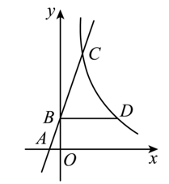
（1）问 \(b、k\) 分别是多少
(2)若点E为射线BC上一点，设E的横坐标为m，过点E作\(EF∥BD\)，交反比例函数\(y=\frac{k}{x}(x>0)\)于点F．若\(EF=\frac{1}{3}BD\)，求m的值．
*6.8 （2024·江苏徐州·二模）已知\(\triangle ABC\)是等腰直角三角形，\(∠C = 90°,AC=BC\)．
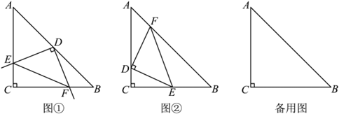
（1）当 \(AC = BC =6\) 时
① 如图①，将直角的顶点D放至\(AB\)的中点处，与两条直角边\(AC、BC\)分别交于点 \(E、F\)，请说明\(\triangle DEF\)等腰直角三角形
②如图②，将直角顶点D放至 \(AC\) 边的某处，与\(\triangle ABC\)另两边的交点分别为点E、F，若\(\triangle DEF\)等腰直角三角形且面积为4，求\(CD\)的长．
(2)若等腰直角三角形\(\triangle DEF\)三个顶点分别在等腰直角\(\triangle ABC\)的三边上，\(\triangle DEF\)的直角边长为1时，求等腰直角\(\triangle ABC\)的直角边长的最大值．
6.9 （2024·江苏苏州·二模）“今天立夏，过来吃碗三虾面．”在百年老字号裕面堂内，一位老苏州说，苏州人立夏传统“尝三鲜”是蚕豆、苋菜、蒜苗，今年立夏提前吃碗夏令三虾面尝尝鲜．为了抓住这一商机，两商户决定生产预制面．据统计，甲商户每小时生产600包，乙商户每小时生产800包，甲乙两商户每天共生产16小时，且每天生产的三虾面总包数为11400包．
(1)甲、乙两商户每天分别生产多少小时？
(2)由于三虾面在网上直播热销，客户纷纷追加订单，两商户每天均增加了生产时间，其中甲商户比乙商户多增加2小时，在整个生产过程中，甲商户每小时产量不变，而乙商户由于机器损耗及人员不足，每增加一个小时，每小时产量将减少140包，这样两商户一天生产的面条总量将比原来多1200包．求：甲商户增加的生产时间为多少小时？
平面直角坐标系与函数初步
点的位置与坐标
1.1 （2024•秦淮区校级三模）已知点\(P(2,-3)\)关于\(y\)轴的对称点为\(Q(a,b)\)，则\(a+b\)的值是多少
1.2 （2023•南京模拟）点\(M\)位于平面直角坐标系第四象限，且到\(x\)轴的距离是5，到\(y\)轴的距离是2，则点\(M\)关于原点对称的点\(M'\)的坐标是多少
*1.3 （2023•新北区校级二模）如图，在平面直角坐标系中，\(A、B、C\) 三点的坐标分别为 \((\frac{1}{2},1),(4,1),(3,0)\)，点\(P\)为线段\(AB\)上的一个动点，连接\(PC\)，过点\(P\)作\(PQ⟂PC\)交\(y\)轴于点\(Q\)，当点\(P\)在\(AB\)上运动时，点\(Q\)随之运动，设点\(Q\)的坐标为\((0,t)\)，则\(t\)的取值范围是多少
找规律
*2.1（2021•清江浦区二模）如图，直线\(l\)的函数表达式为 \(y=2x\)，过点\(A_{1}(1,0)\)作\(A_{1}B_{1}⟂x\)轴，与直线\(l\)交于点\(B_{1}\)，以原点\(O\)为圆心，\(OB_{1}\)长为半径画圆弧交\(x\)轴于点\(A_{2}\)；再作\(A_{2}B_{2}⟂x\)轴，交直线\(l\)于点\(B_{2}\)，以原点\(O\)为圆心，\(OB_{2}\)长为半径画圆弧交\(x\)轴于点\(A_{3}\)； ，按此作法进行下去，则点\(A_{2021}\)的坐标为
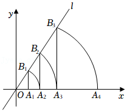
2.2 （2022•南京）如图，在平面直角坐标系中，横、纵坐标均为整数的点按如下规律依序列： \((0,0)(1,0)(0,1)(2,0)(1,1)(0,2)(3,0)(2,1)(1,2)(0,3)(4,0)(3,1)(2,2)(1,3)\)，按这个规律，\((6,7)\) 是第多少个点 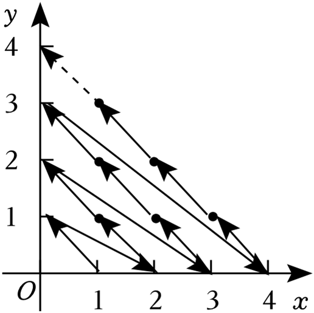
距离相关
3.1 （2022•江阴市模拟）如图，半径为1的\(☉O\)的圆心在坐标原点，\(P\)为直线\(y = 2x+1\)上一点，过点\(P\)作\(☉O\)的切线，切点为\(A\)，连接\(OA,OP\)．下列结论：
①当\(\triangle OAP\)为等腰直角三角形时，点\(P\)坐标为\((1,1)\) ；
②当\(∠AOP = 60°\)时，点\(P\)坐标为\((2,0)\)；
③ \(\triangle OAP\)面积最小值为\(0.5\) ；
④ \(∠APO = 45°\) 其中正确的有哪几个
3.2 （2019•滨湖区模拟）在平面直角坐标系中，点\(P\)的坐标为\((0,2)\)，点\(M\)的坐标为\((m-1,-\frac{3}{4}m-\frac{9}{4})\)（其中\(m\)为实数），当\(PM\)的长最小时，求 \(m\) 的值
求自变量或者因变量的取值范围
- 函数解析式为整式时，字母取值范围为全体实数；
- 函数解析式含有分式时，分式的分母不能为零；
- 函数解析式含有二次根式时，被开方数大于等于零；
- 函数解析式中含有指数为零的式子时，底数不能为零；
- 实际问题中函数取值范围要和实际情况相符合，使之有意义.
4.1 （2022•张家港市一模）对于函数\(y=\dfrac{3-2x}{5}\)，自变量\(x\)的取值范围是多少
4.2 图1是变量\(x\)与变量\(y\)的函数关系的图象，图2是变量\(z\)与变量\(y\)的函数关系的图象，则\(z\)与\(x\)的函数关系的图象可能是

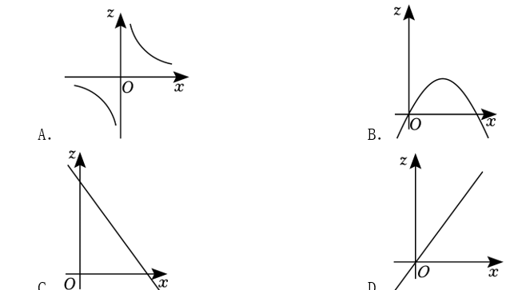
4.3 （2024•南京自主招生）将\(y=\frac{4}{x}\)向右平移两个单位，向下平移1个单位，与\(y=kx-2k-1\)有两个交点，分别为\((a,m),(n,b)\)，则\((a-2)(b+1)\) 是多少
4.4 （2021•梁溪区校级二模）如图，\(\triangle ABC\)中， \(∠ACB=90°\)，\(AB = 10\)，\(BC = 2√5\) ．点\(P\)是斜边\(AB\)上一个动点．过点\(P\)作\(PQ⟂AB\)，垂足为\(P\)，交边\(AC\)（或边\(CB\)于点\(Q\)，设\(AP = x\)，\(\triangle APQ\)的面积为\(y\)，则\(y\)与\(x\)之间的函数图象大致为

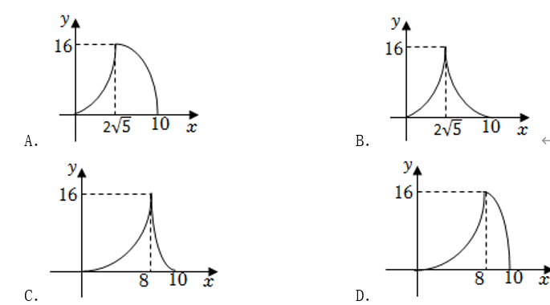
*4.5 （2022•邳州市校级模拟）在同一平面直角坐标系中，函数\(y=ax+a\)和函数\(y=ax^{2}+x+2\)，\(a\)是常数，且\(a≠0\)的图象可能是 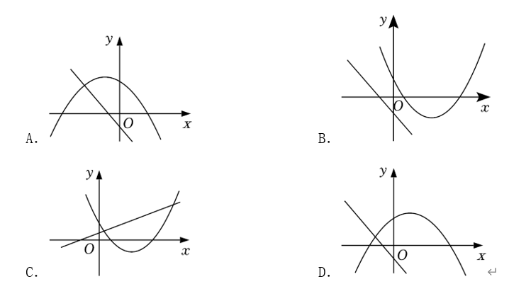
分析题
5.1 （2024•常州）在马拉松、公路自行车等耐力运动的训练或比赛中，为合理分配体能，运动员通常会记录每行进\(1km\)所用的时间，即“配速”（单位：\(km/min\)．小华参加\(5km\)的骑行比赛，他骑行的“配速”如图所示，则下列说法中错误的是
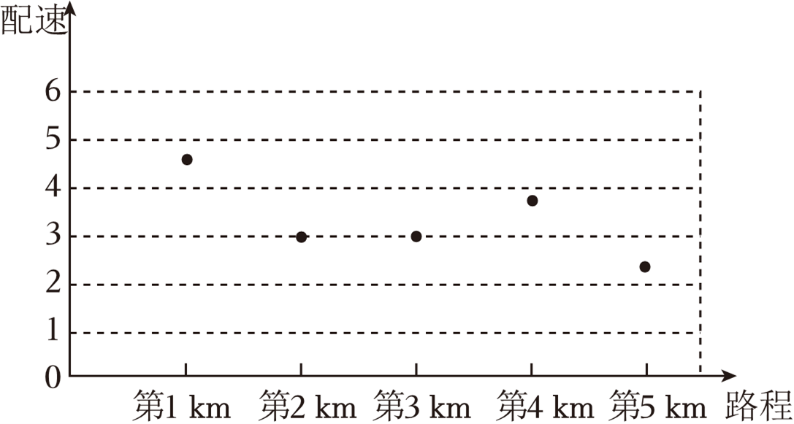
5.2 （2024•高港区三模）为了解某新能源汽车的充电速度，实验小组调查研究发现：当汽车充电率\(w\)（充电率\(w=\dfrac{充电电量}{电池容量}\)） 满足\(0.2 ≤ w < 0.9\)时，用该品牌汽车专用充电桩充电，汽车充电率\(w_{1}\)与充电时间\(t\)（单位:\(h\)） 的函数图象是折线\(ABC\) ；用公共充电桩充电时，汽车充电率\(w_{2}\)与充电时间\(t\)（单位：\(h\)） 的函数图象是线段\(AD\) ．研究表明：为保护电池寿命，当充电率超过0.8时，品牌专用充电桩的充电速度与公共充电桩充电速度相同．根据以上信息，回答下列问题：
（1）求\(AD\)的函数解析式．
（2）若该汽车充电率从0.2至0.9，用品牌专用充电桩比公共充电桩充电少用多少时间？ 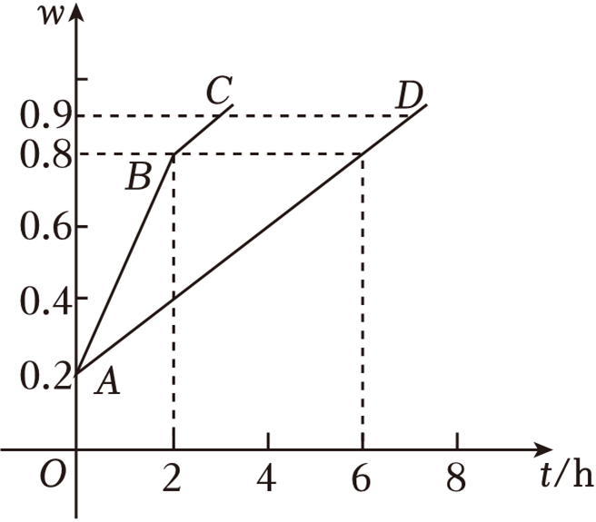
一次函数的图像及其性质
说几句废话
-
如何在函数的基础上理解一次函数，它的图像与性质有什么特点，举个例子，如果自己写出几个一次函数，尝试画出函数图象，回答出这个函数的交点，单调性
-
\(k,b\) 的意义以及对两个直线的位置关系的意义
-
待定系数法
-
数形结合，一次函数与一元一次方程以及二元一次方程组、医院一次不等式组的关系
待定系数法
10.1（2023•靖江市模拟）已知直线\(y=\dfrac{4}{3}x+4a(a>0)\) 与\(x\)轴交于点\(A\)，与\(x\)轴交于点\(B\) 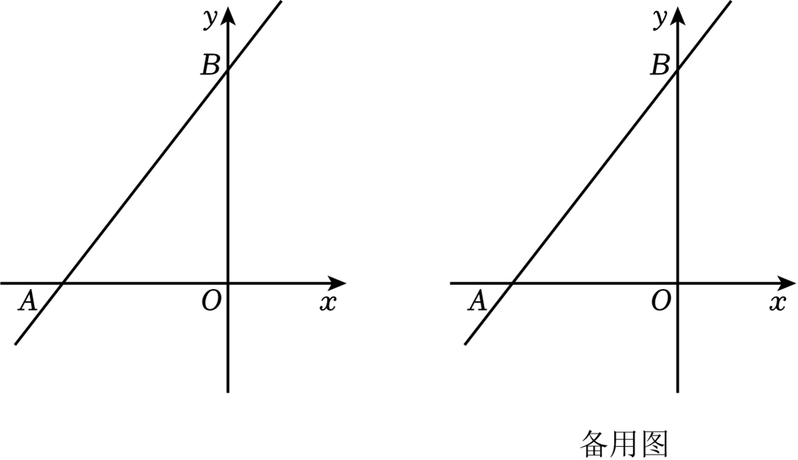 （1）直接写出\(A、B\)两点的坐标（用含有\(a\)的代数式表示）；
（2）当\(a=1\)时，在双曲线\(y=\dfrac{a}{x}\)位于直线\(AB\)下方的图象上找一点\(D\)，使得\(S_{\triangle ABD} = 4\)，求出点\(D\)的坐标；
（3）点\(C\)在\(y\)轴上，坐标为\((0,na)\)，且直线\(y=kx+\dfrac{3}{7}k-7(k≠0)\)过一定点\((n,-7)\)，试判断\(∠BAC - 2∠OAC\)的值是否会发生变化．若不变化，请求出该值；若变化，请说明理由．
求直线与坐标轴围成的面积
10.2（2022秋•兴化市校级期末）如图，正比例函数\(y=-3x\)的图象与一次函数\(y=kx+b\)的图象交于点 ，一次函数图象经过点 ，与 轴的交点为 ，与 轴的交点为 ．
（1）求一次函数表达式；
（2）求\(\triangle COP\)的面积．
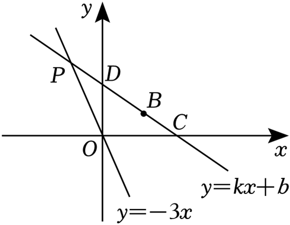
几何题复习
说到底，其实我很不愿意写这玩意儿，为啥，因为学着没啥用，除非你学的时候用心用脑，否则我个人认为培养点逻辑和兴趣即可，别把时间精力大部分花在这儿，后面相关的数学知识可和这玩意一点不相干，可别走火入魔了